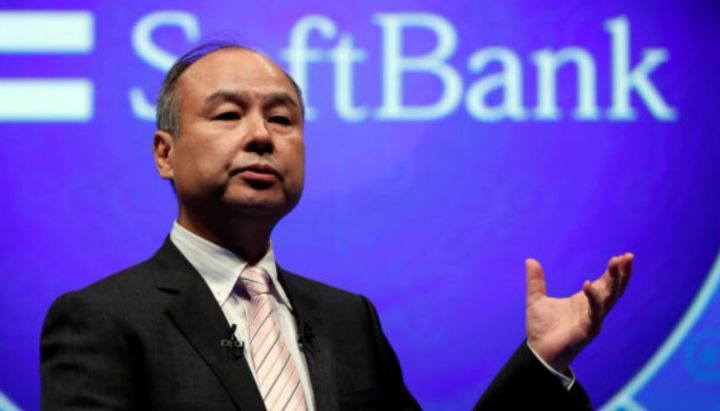

Niin kauan kuin musiikki soi
”Maailmassa monta on ihmeellistä asiaa, se hämmästyttää, kummastuttaa pientä kulkijaa." – Ihme ja kumma, lastenlaulu
Niin kauan kuin musiikki soi, pitää tanssia. Näin lennokkaasti Citigroupin entinen toimitusjohtaja Chuck Prince kuvaili silloista markkinaa heinäkuussa 2007. Hänen mukaansa markkinoilla oli niin paljon likviditeettiä, ettei sitä suistaisi raiteiltaan edes USA:n asuntolainamarkkinan hermoilu, josta tuolloin oli merkkejä. Citin osake oli ATH-tasoilla.
Tosiasiallisesti musiikki oli kuitenkin jo lakannut. Viisi kuukautta myöhemmin, kurssista oli lähtenyt 40%. Samoin Prince sai lähteä. Reilu vuosi myöhemmin, osake vihdoin pohjasi. Laskua huipuista 98%.
Riski voi realisoitua nopeasti. Kuten on käynyt nytkin. Vielä reilu viikko sitten S&P500 puhkoi uusia ennätyksiä eikä kauaakaan, kun puhuttiin pikemminkin markkinan melt-upin riskistä. Yleinen narratiivi oli, että talouskasvu tai yhtiöiden tuloskunto eivät hiipuisikaan kuten oli pelätty ja keskuspankit olivat tukemass. Kauppasodan sovintokin olisi vain enää muodollisuus. Takana oli historiallisen hyvä alkuvuosi. Retail-sijoittaja oli suorastaan hurmiossa.
Howard Marks puhuu sijoittajakirjeissään siitä kuinka on mahdotonta ennustaa markkinoiden liikkeitä. Sen sijaan voi katsoa miten muut markkinaosapuolet käyttäytyvät ja arvioida ovatko tunnelmat euforiset vaiko kenties pelokkaat. Sen pohjalta voi mukauttaa omat odotuksensa tulevasta mahdollisesta tuottokehityksestä. Marks itse on jo joitakin vuosia toistanut mantraansa ”move forward, but with caution”. Eli turha poteroonsa on vetäytyä, mutta syytä on olla varovainen.
Seuraavassa muutama huomio markkinan eri osa-aluista, jotka ovat viime aikoina ihmetyttäneet. Myös hieman spekulaatiota venyvästä kauppasodasta. Lopuksi vielä siitä miltä meidän oma pelikirja näyttää.
Kehostapoistumiskokemus
IPO-markkina on käynyt jokseenkin kuumana jo useamman vuoden. Sen kulminaatiopiste on kuitenkin ollut vuosi 2019. Odotetuimpia ovat olleet Uber ja Lyft, joiden molempien pörssitaival alkoi kivikkoisesti. Parin ensimmäisen päivän jälkeen Uberin markkina-arvosta oli poistunut lähes puolet, jos sitä vertaa viime syksynä huhuiltuun USD120bn valuaatioon.
Osa heikosta lähdöstä Uberin kohdalla selittyy epäonnekkaasta ajoituksesta. Markkina ei varsinaisesti ole ollut vastaanottavainen viime päivinä. Toisaalta, kuten Bloombergin kolumnisti Matt Levine osuvasti totesi, kyseeseen tulee yksityisen ja julkisen markkinan rakenteellinen ero.
Yksityisellä markkinalla kysynnän ollessa vahva, voidaan valuaatio määritellä hyvinkin korkealle. Kun markkina hiljenee, ellei ole pakko, ei kerätä rahaa, eikä näin ollen ole tarve määritellä hintaa alaspäin. Toisin kuin julkisilla markkinoilla, yksityisillä markkinoilla ei myöskään ole kriittisesti sijoituksiin suhtautuvia lyhyeksimyyjiä. Näin ollen yksityisillä markkinoilla hinnanasetannan määrittelevät ainoastaan optimistit, joilla kaikilla on saman suuntaiset intressit – pitää arvostus korkealla.
Ja tässä piile iso ongelma. Kuten jokainen oman asunnon omistaja tietää, ei asunnon omistaminen tunnu läheskään niin riskiseltä kuin pörssiosakkeisiin sijoittaminen. Oman asunnon arvo kun ei määrity markkinapaikalla, joita ajavat eläimelliset tunteet. Sen arvon muutosta ei näe jokaisena hetkenä, kuten pörssikurssien. Oman asunnon arvo realisoituu tai lopullisesti määritellään, kun se myydään. Se ei kuitenkaan tarkoita, etteikö sen arvossa tapahtuisi muutoksia.
Aivan kuten osakkeenkin arvo voi muuttua ilman kauppaa, voi oman asunnonkin. Se ei kuitenkaan ole ongelma, jos asunnon vapaan vakuusarvon suhde on pankin mielestä riittävä ja jos velanhoitokustannuksiin on riittävästi tuloja. Mutta mitä tapahtuu, kun tulot putoavat tai kuten monissa yksityisissä yhtiöissä, joissa ei ole tuloja eikä likviditeettiä ole saatavilla?
Uber keräsi listautuessaan uutta rahaa yli USD8bn. Näin siitäkin huolimatta, että yksityisenä yhtiönä se ehti kerätä vähintään 20bn. Rahaa palaa kasvuun ja toiveissa on, että jonain päivänä rahalla saisi jotain tuottoakin. Jos siinä ei onnistuta, joudutaan tulemaan uudestaan sijoittajien kukkarolle. Ja jos jostain syystä rahaa ei heruisikaan, olisi tilanne vähintäänkin kimurantti. Sama tilanne on Teslalla. Vielä markkinat ovat valmiita jatkamaan yhtiön rahoittamista. Toistaiseksi.

Vielä musiikki soi. Kukaan ei ole tanssinut sen tahdissa yhtä antaumuksella kuin Softbankin Masayoshi Son. Softbank nimittäin kertoi vievänsä nykyisen USD100bn venture capital -rahastonsa pörssiin ja keräävänsä uudet USD100bn VC-sijoituksiin. Monet alan toimijat ovat jo tähänkin mennessä olleet sitä mieltä, että Softbankin rahastot ovat liian isoja ja rahan tyrkyttäminen kasvuyhtiöille holtitonta.
Riskinä on, että pääomat ammutaan ympäriinsä, ja kun se kuuluisa musiikki lopulta lakkaa, niin kuin se aina aika-ajoin tekee, jää yhtiöiden omistajille jäljelle vain Exceliin joskus visioitu arvostus. Tuolloin vain toivoo, ettei kyseistä paperilla olevaa varallisuutta vastaan ole otettu velkaa. Vaikka likviditeettiä nyt suorastaan loiskuu ympäriinsä ja yli äyräiden, voi se kuivua kasaan yllättävänkin nopeasti.
Ja sitten on private equity -markkina. Kuten kirjoitimme Viikon kuumissa linkeissä maaliskuussa:
”Private equity -yhtiöillä on historiallisen paljon kuivaa ruutia eli heille uusiin sijoituksiin korvamerkittyjä sijoittajien varoja. Samaan aikaan PE-diilien arvo edellisten viiden vuoden aikana on korkein viiden vuoden periodi koskaan. Yhtiöt kilpailevat pienenevistä apajista ja arvostukset ovat viimeisten kahden vuoden aikana nousseet historiallisen korkealle (11x EBITDA). Jotta päästäisiin lähemmäs historiassa totuttuja tuottoja, joutuvat PE-yhtiöt vivuttamaan ostamansa yritykset entistä enemmän. Nyt jo 40% tapauksissa velkavipu on 7x EBITDA!
Pari kuukautta myöhemmin ja maailman suurin PE-talo ilmoitti keränneensä Q1:llä uutta rahaa USD43bn. Yhteensä edellisten 12 kuukauden aikana he olivat keränneet 126bn! Toimitusjohtaja Stephen Schwarzman kuvaili tunnetta epätodelliseksi kehostapoistumiskokemukseksi (”out of body experience”). Rahaa sataa ovista ja ikkunoista niin, ettei uskoisikaan! En tiedä muista, mutta omat hälytyskelloni alkaisivat soimaan, jos taho, jolle olen allokoimassa pääomiani, kommentoisi asiaa näin.
Jos private equityyn haluaa ehdottomasti sijoittaa, olisi hyvä ohjata tuotto-odotuksiaan jo nyt alaspäin. Muutoin, nämäkin karkelot tulevat loppumaan kyyneliin.
Peliteoriaa parhaimmillaan
Tähän vuoteen tultaessa, markkinat olivat myllerryksessä. Tuolloin sekä USA:lla että Kiinalla oli selvä intressi olla myönnytteleväisiä. Sittemmin alkuvuoden rallin jälkeen Kiinan osakemarkkinat olivat alkuvuoden parhaiten nousseita indeksejä maailmassa. Presidentti Xi kenties koki neuvotteluvalttinsa parantuneet, etenkin kun samalla Trump joukkoineen painosti Fediä laskemaan korkoa. Olisiko tämä ollut heikkouden merkki kiinalaisten silmissä?
Trumpin mukaan kiinalaiset alkoivat hidastelemaan ja jopa halusivat uudelleen neuvotella jo sovittuja asioita. Trump päätti, että neuvottelutaktisesti olisi hyvä paikka iskeä – olihan hän jopa kirjoittanut kirjan miten diiliin päästään. Hän arvioi kiinalaisten pelaavan aikaa ja päätti nostaa aiemmin kumoamansa uhka uusista tulleista uudelleen pöydälle.
Trumpin mielestä USA:n talous, joka kasvoikin Q1:llä yli 3% (todellisuudessa osin kertaluonteisien syiden avittamana, jotka kääntyvät Q2:lla) on kylliksi vahva, jotta siihen voi nojata. Hän jopa spinnasi vahvan BKT-kasvun johtuneen Kiinalta saaduista tariffimaksuista. Talousteoreettisesti on laajalti näyttöä, kuinka huono asia ne ovat kaikkien osapuolien kannalta. Sillä ei kuitenkaan ole mitään väliä Trumpin kannattajien tai hänen tekemistensä kanssa. Tämän Trump tietää. Ei hän tyhmä ole.
Globaalit markkinat ovat jääneet kukkotappelun ristituleen. Kyse on nimittäin myös egojen taistosta. Nyt pitää muistaa, että Kiinan presidentti Xi on vuosi sitten perustuslakia muuttamalla valituttanut itsensä Kiinan elinikäiseksi johtajaksi. Hänellä tuskin on haluja näyttäytyä kansan silmissä heikkona johtajana, joka nöyrtyisi Länsivaltojen öykkärin edessä.
Ei olisi ensimmäinen kerta, kun länkkärit ylemmyyskompleksineen jäisivät toiseksi kiinalaisten kanssa. Pois lukien Ooppiumisodat, useampia kertoja viime vuosisatojen saatossa kiinalaiset ovat lopulta näyttäneet, etteivät ole valmiita nöyristymään. Alibaban Jack Ma totesi jo viime syksynä Kiinan valmistautuvan 20-vuotta kestävään kauppasotaan. Jack Man mukaan konfliktilla olisi suuremmat ja kauaskantoisemmat vaikutukset kuin mitä monet uskaltaisivat odottaa.
Kiinan on kuitenkin puun ja kuoren välissä. Yhtäältä, heillä on kauppasodassa enemmän hävittävää kuin Yhdysvalloilla. Toki lyhyellä aikavälillä Jenkki-kuluttaja maksaa korkeamman hinnan tuotavasta tuotteesta, mutta ajan kanssa sille löytyy uusi tuottaja halvemman tuotannon maista kuten esimerkiksi Vietnamista. Yhdysvalloille negatiivinen efekti olisi lyhytaikainen, Kiinalle se voi olla pysyvä.
Toisaalta, kiinalaiset pelaavat pitkää peliä. Pidempää kuin Trump, joka alkaa valmistautua jo uusiin vaaleihin. Pidempää kuin monet muut taloudet, jotka elävät normaalien äänestyssyklien mukaisesti. Haluaako Trump riskeerata lyhyen ajan piinan näin lähellä vaaleja? Toki Kiinallakin on tasapainoilemista oman taloutensa kanssa. Kasvutahti on hidastumassa eikä velkaelvytyksellä saada enää vastaavaa impulssia talouteen kuin aiemmin.
Kiina on kuitenkin jo maailman toiseksi suurin talous. Se on perässähiihtäjän edun turvin saanut imettyä itseensä taloudellista osaamista. Se on jo pitkään kehittänyt kauppasuhteitaan myös muuhun Aasiaan ja Afrikkaan. Vastapuoliriskiä on hajautettu Yhdysvaltojen ulkopuolelle. Heidän tehokkailla logistiikkaketjuillaan voidaan tavaravirtoja ohjata muutoinkin kuin suoraan Amerikkaan.
Nyt kysymys kuuluukin: mikä on Kiinan oikea tavoite? Haluavatko he vain pelata aikaa ja lopulta haistattaa pitkät Trumpille? Vai nouseeko heillä paine tehdä sopimus, jos konfliktin pitkittyessä taloudessa ja markkinoilla tilanne kiristyy.
Sijoittajan kannalta mielenkiintoista on, kuinka paljon markkinoiden tulisi laskea, ennen kuin näistä kukoista toisen pokka pettää. Tällä hetkellä narratiivi näyttää edelleen olevan sen puolella, että sopimus vielä syntyy tämän vuoden puolella. Seuraavaksi osapuolien on tarkoitus tavata ja jatkaa keskusteluja kesäkuun lopulla G20-tapaamisen yhteydessä Japanissa – tilaisuudessa, jossa aikaisemmin odotettiin sopimuksen solmittavan.
Nyt tämä tuorein nokittelu toimi hyvänä muistutuksena sijoittajille riskeistä. Se on hyvä asia. Se miten kauppasodassa lopulta käy, on sitten eri asia. On hyvä kuitenkin pitää mielessä se vaihtoehto, että tilanne voi pitkittyä. Ja ennen kuin se muuttuu paremmaksi, voi se huonontua.
Nomadien pelikirja
Kuten mainitsimme ensimmäisen kvartaalin jälkiviisasteluissa, olemme olleet koko alkuvuoden liikkeellä varsin maltillisella riskipainolla. Keskimäärin se oli Q1:n aikana 20-25%. Tuloskauteen tultaessa ja etenkin USA:n markkinoiden kutkuteltua jo ATH-tasoja, olimme laskeneet nettoriskin käytännössä nollaan.
Kun reilu viikko sitten Trump päätti kriisiyttää tilanteen, reagoimme muuttuvaan narratiiviin menemällä ensimmäistä kertaa markkinaa nettoshortiksi. Negatiivisempaa näkemystä vahvisti se, kun etenkin USA:n pääindekseistä mm. S&P500, Nasdaq (teknologia) ja Russell 2000 (pienet ja keskisuuret yhtiöt) epäonnistuivat omissa breakouteissaan uusille tasoille.
Viikkoa myöhemmin, nyt alkuviikosta, aloimme jo ostamaan pommitettuja Suomi-yhtiöitä, ja osakepainomme nousi jälleen pienelle plussalle. Jatkamme suojien kanssa (etenkin USA-indeksifutuurit) ja olemme valmiita kasvattamaan nettoshorttia jos indeksien tasot murtuvat. Jatkamme myös kullan omistajina vajaan 10% painolla salkuista.
Kauppasodan pitkittyminen on huono asia globaalille taloudelle, joka ei muutoinkaan varsinaisesti vakuuta vahvuudellaan. Elämme näkemyksemme mukaan tämän noususyklin jälkivaiheita. Se ei tietenkään tarkoita, että markkinoiden tulisi romahtaa. Pyrimme kuitenkin olemaan selektiivisiä valinnoissamme. Nyt on pikemminkin pääomien puolustamisen vaihe, kuin aggressiivisen riskin ottamisen.
Sijoituspäätöksien kannalta tilanne on haasteellinen, kun markkinoita heiluttaa mielivaltainen twiittailu. Pitkäaikaisen sijoittajan suunnitelmiin sillä ei ole kuitenkaan mitään väliä. Meille heilunta ja epävarmuus tuo mahdollisuuksia niin onnistumisiin kuin myös epäonnistumisiin.
Markkinat eivät milloinkaan lakkaa hämmästyttämästä. Juuri kun luulee ymmärtävänsä miksi markkinat ovat käyttäytyneet kuten ne ovat, on kokeva nöyryytyksen. Kuin isku maksan kärkeen, markkinat, pudottavat aina maanpinnalle.
Pienen kulkijan ei auta muu kuin pitää leuka rinnassa ja pahimpaan varautuen jatkaa avoimin mielin vaellustaan kohti tuntematonta.
Disclaimer:
Kolumnit sisältävät mielipiteitä ja mahdollisesti tietoa omista sijoituksistamme, jotka voivat vaihdella päivästä toiseen. Mitään, mitä kirjoitamme ei tule ottaa sijoitussuosituksena. Kuten teksteissämme painotamme, päätökset kannattaa aina tehdä itse. Lukija vastaa itse voitoistaan ja tappioistaan.